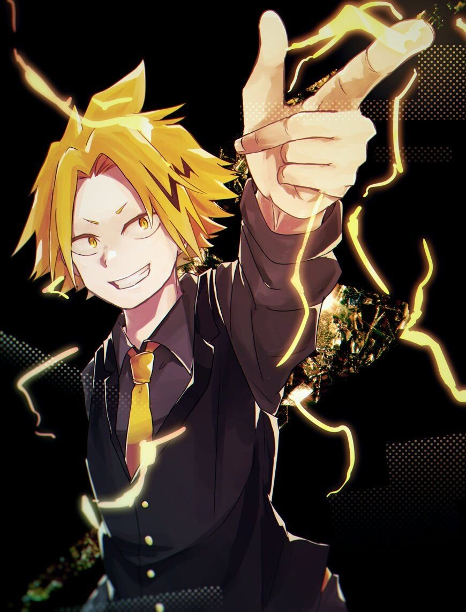

Эйджиро Киришима (切きり島しま鋭えい児じ郎ろう Kirishima Eijirō) (Эйдзиро Кирисима в официальном русском издании) известный также как Мужественный герой: Красный Бунтарь (剛健ヒーロー 烈怒頼雄斗レッドライオット Gōken Hīrō Reddo Raiotto) — студент Юэй, который тренируется, чтобы стать профессиональным героем.
Причуда:Отвердение
Денки Каминари

Денки Каминари (上かみ鳴なり電でん気き Kaminari Denki) (Дэнки Каминари в официальном русском издании), также известный, как Герой-электрошокер: Разряд молнии (スタンガンヒーロー・チャージズマ Sutan Gan Hīrō Chājizuma) — ученик класса 1-A академии Юэй. Тренируется, чтобы стать профессиональным героем.
Причуда:Электроразряд
Очако Урарака
Очако Урарака (麗うらら日かお茶ちゃ子こ Uraraka Ochako), также известная, как Уравити (ウラビティ 'Urabiti') — ученица класса 1-A в академии Юэй, обучающаяся на Профессионального Героя.
Причуда:Невисомасть
Фумикаге Токоями
Фумикаге Токоями (常闇踏陰 Tokoyami Fumikage) — студент класса 1-A в академии Юэй.Любит темноту и все, что с ней связано.
Причуда:Тёмная тень
Тенья Иида
Тенья Иида (飯いい田だ天てん哉や Īda Tenya) (Тэнъя Ида в официальном русском издании), также известный, как Тенья (天哉 Ten'ya) (Тэнъя в официальном русском издании) или Ингениум (インゲニウム Ingeniumu) — ученик и староста Класса 1-A академии Юэй. Тренируется, чтобы стать профессиональным героем.
Причуда:Двигатель
Цую Асуи
Цую Асуи (蛙あ吹すい梅つ雨ゆ Asui Tsuyu) (Цую Асуй в официальном русском издании), также известная, как Героиня сезона дождей: Фроппи (梅雨入りヒーローフロッピー Tsuyuiri Hīrō Furoppī) — ученица класса 1-A академии Юэй, обучающаяся на профессиональную героиню.
Причуда: Форма лягушки
Мина Ашидо
Мина Ашидо (芦戸三奈 Ashido Mina) — студентка Юэй, обучающаяся на профессиональную героиню.Очень веселая девушка с вечной улыбкой на лице. Также она легко возбудима и эмоциональна, что заметно по ее реакции на любое происходящее явление. Может радоваться как настоящий ребенок предстоящей поездке, а также активно комментировать действия людей во время наблюдения за их битвами.
Причуда: Кислота
Юга Аояма
Юга Аояма (青あお山やま優ゆう雅が Aoyama Yūga), также известный, как Сияющий герой: Я не могу перестать блистать — студент академии Юэй, который тренируется, чтобы стать профессиональным героем.
Причуда: Лазер в пупке
class="mg">Маширао Оджиро

Маширао Оджиро (尾お白じろ猿ましら夫お Ojiro Mashirao) (Масирао Одзиро в официальном русском издании) — студент академии Юэй, также известный как Герой боевых искусств: Человек-хвост (武闘ヒーローテイルマン Butō Hīrō Teiruman). Тренируется, чтобы стать профессиональным героем.
Причуда: Хвост
Коджи Кода

Коджи Кода (口田甲司 Kōda Kōji) — студент академии Юэй, который тренируется, чтобы стать профессиональным героем.
Причуда: Голос животных
Рикидо Сато

Рикидо Сато (砂藤力道 Satō Rikidō) — ученик класса 1-А академии Юэй, обучающийся на профессионального героя.
Причуда: Сахарный допинг
Мезо Шоджи
Мезо Шоджи (障しょう子じ目め蔵ぞう Shōji Mezō) (Мэдзо Сёдзи в официальном русском издании), также известный как Герой с щупальцами: Щупальце (触手ヒーロー テンタコル Shokushu Hīrō Tentakoru) — студент из класса 1-A академии Юэй, обучающийся на профессионального героя.
Причуда: Руки-репликанты
Кьёка Джиро
Джиро (耳郎響香 Jirō Kyōka) (Кёка Дзиро в официальном русском издании), также известная как Слышащая героиня: Наушный разъём (ヒアヒーロー イヤホン＝ジャック) — студентка класса 1-A в академии Юэй, обучающаяся на профессионального героя.
Причуда: Ушные разъемы
Минору Минета
Минору Минета (峰みね田た実みのる Минору Минета) - студент академии Юэй, который тренируется, чтобы стать Профессиональным Героем.
Причуда: Волосы-виноград
Момо Яойороз
Яоёродзу в официальном русском издании, также известная, как Героиня всего на свете: Креативность (万物ヒーロー クリエイティ Banbutsu Hīrō Kurieiti) — вице-президент Класса 1-A школы Юэй, в которую поступила ввиду официальной рекомендации. Тренируется, чтобы стать профессиональным героем.
Причуда: Созидание
Шота Аизава
Шота Аизава (相あい澤ざわ消しょう太た Aizawa Shōta) (Сёта Айдзава в официальном русском издании), более известный, как Стирающий герой: Сотриголова (イレイザーヘッド Ireizāheddo) — герой и классный руководитель класса 1-A в Юэй.
Причуда: Стирание причуд